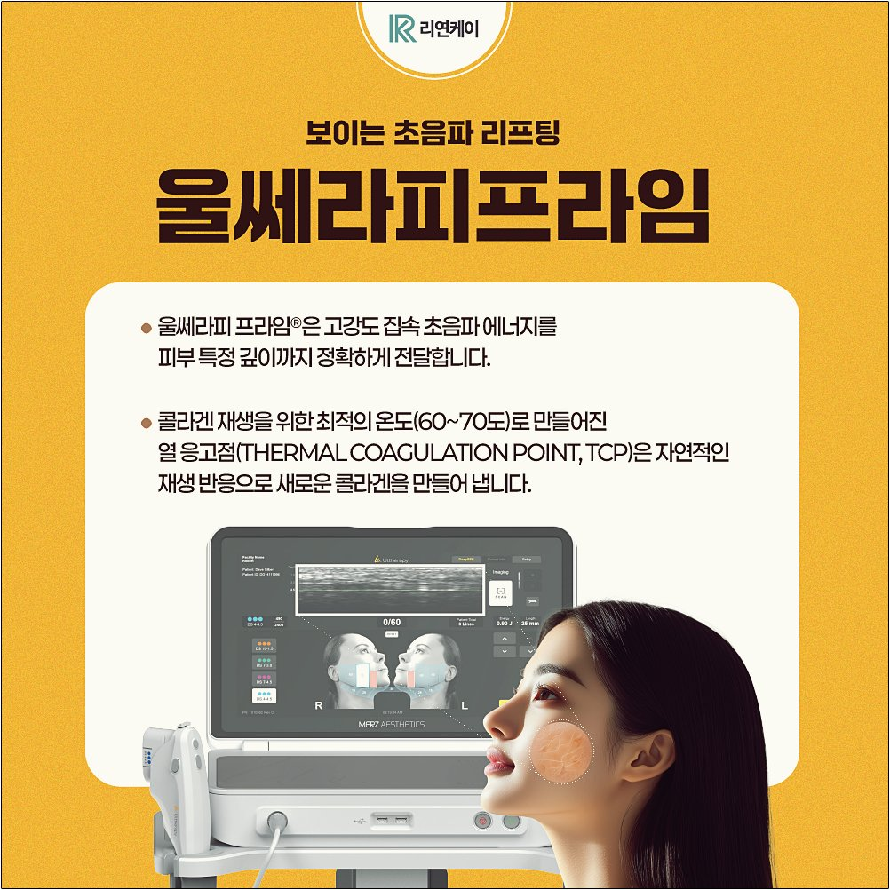
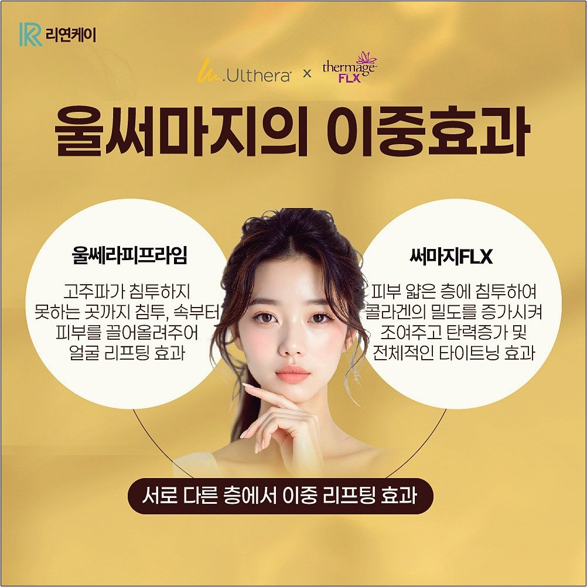
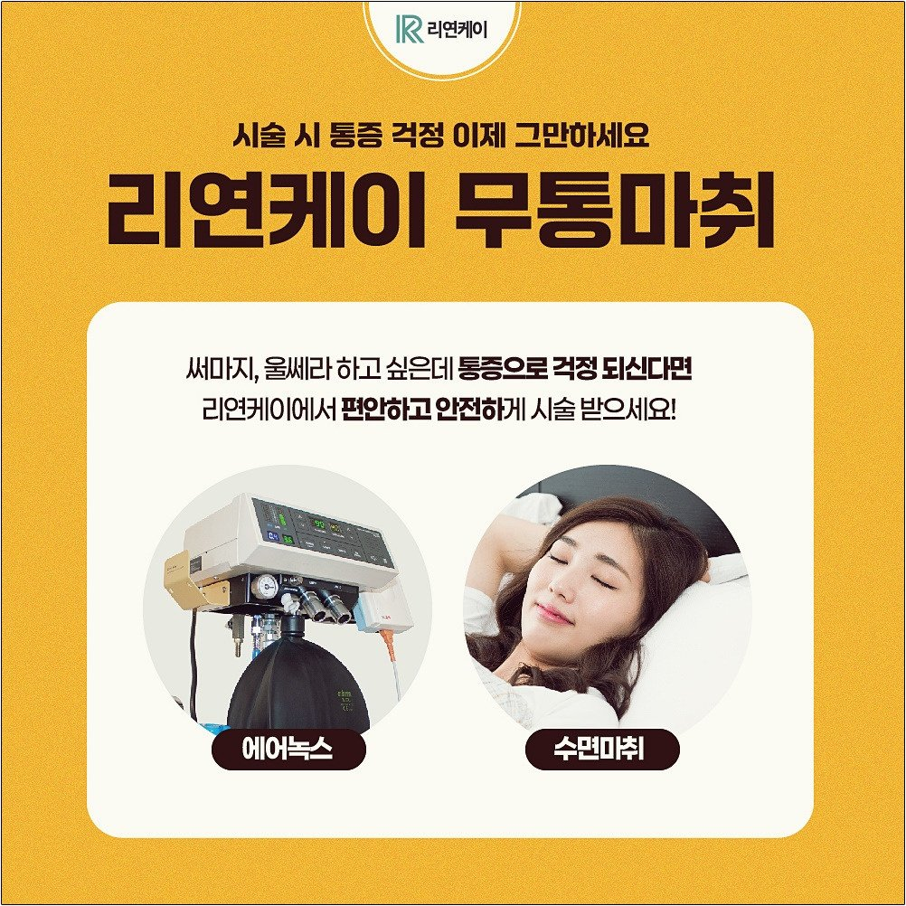
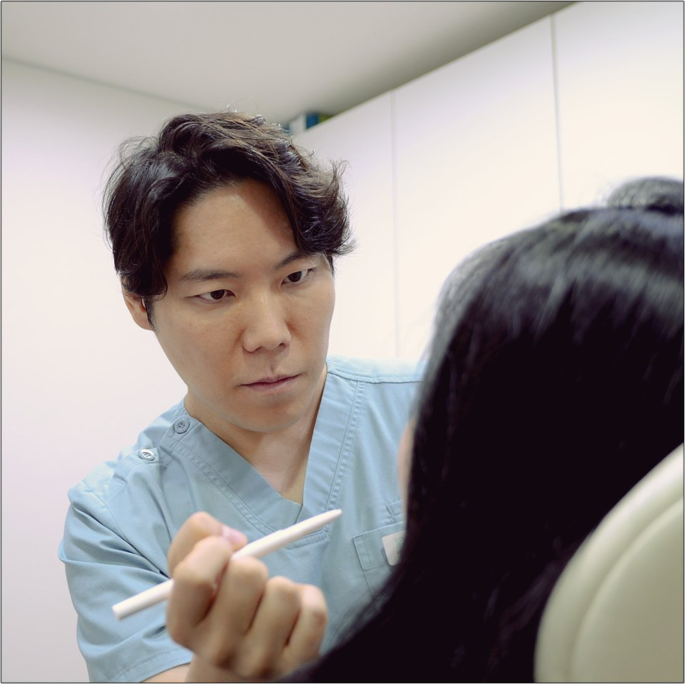
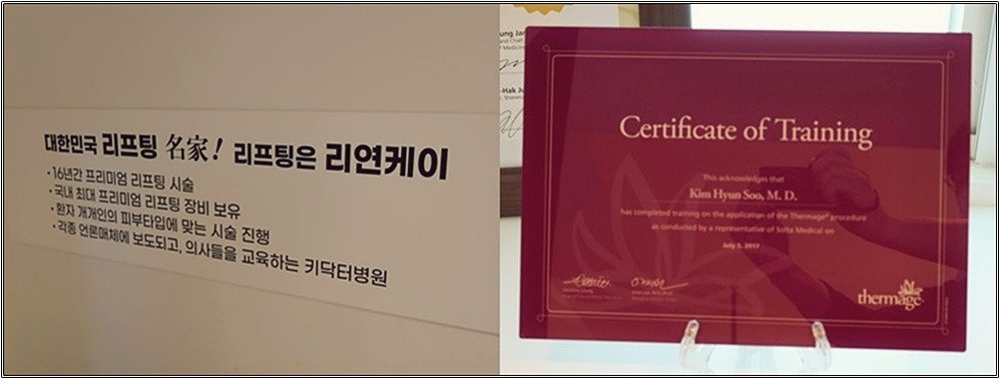
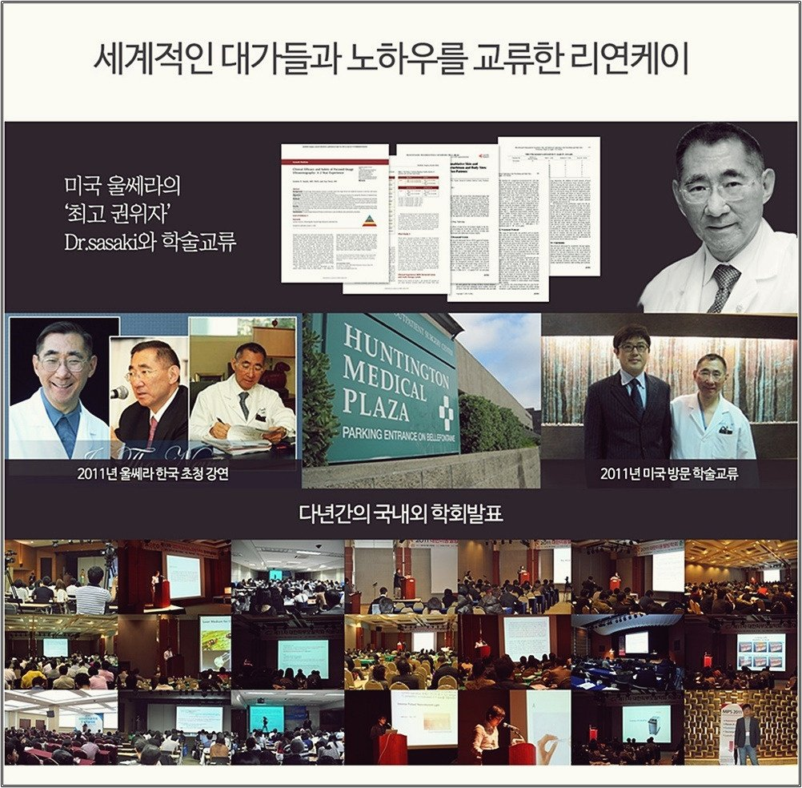

턱선이 흐려지고 볼이 처져 보이기 시작했다면, 원인은 피부 깊은 곳에 있습니다.
얼굴선이 무너지는 것은 피부 표면만의 문제가 아닙니다. 피부 깊은 층의 콜라겐과 섬유조직이 줄어들면서 생기는 자연스러운 노화 현상입니다. 30대 후반부터는 이중턱, 심부볼 처짐, 팔자주름, 흐려지는 턱선이 눈에 띄게 나타날 수 있습니다.
울쎄라는 고강도 집속 초음파(HIFU)를 이용한 리프팅 시술입니다. 피부 표면은 손상하지 않고, 피부 깊은 층까지 에너지를 전달합니다.
초음파 에너지가 진피층과 SMAS층에 열 응고점을 만들어 피부 조직의 수축을 유도하고, 콜라겐 재생을 통해 탄력 개선을 기대할 수 있습니다.

핵심은 신경과 혈관을 피해, 필요한 층을 정확하게 겨냥하는 것입니다.
모니터 픽셀 밀도가 91% 향상되어 진피, 지방, 근막층의 경계를 더 또렷하게 구분할 수 있습니다.
확인할 수 있는 깊이가 늘어나, 피부나 지방층이 두꺼운 부위도 직접 보면서 시술할 수 있습니다.
필요한 층에 에너지를 정확하게 전달해 볼패임이나 신경 손상 위험을 줄이는 데 도움이 됩니다.
300샷은 보통 턱선 위주로 진행합니다. 얼굴 전체에 리프팅이 필요하다면 600샷으로 여러 부위를 충분하고 세밀하게 시술할 수 있습니다.
울쎄라 풀페이스 가이드에서도 얼굴 전체 시술에는 600~1,000샷 정도를 권장하고 있습니다.
울쎄라와 써마지FLX는 작용하는 피부층도, 기대할 수 있는 효과도 다릅니다.
고주파로 진피층 콜라겐 밀도를 높여 잔주름, 피부 탄력, 모공 등 전반적인 피부결 개선을 기대할 수 있습니다.
초음파로 피부 속부터 끌어올려 처진 피부와 이중턱 개선에 도움이 됩니다.
두 시술을 함께 받는 울써마지는 겉은 조여 주고 속은 끌어올려, 겉과 속을 동시에 관리하는 이중 리프팅입니다.

울쎄라의 대표적인 통증은 피부 안쪽을 찌르는 듯한 신경통입니다.
300샷은 마취연고만으로 받는 분도 있지만, 600샷은 통증이 커서 수면마취나 에어녹스(스마일 가스)를 함께 고려하시는 것이 좋습니다.

산소호흡기, 심장 모니터 등 안전장비를 갖춘 수술실에서만 수면마취를 진행해 만일의 상황에 대비합니다.
시술 후 1인실에서 충분히 쉬고 퇴원할 수 있어, 수면 후 어지러움 등을 편하게 회복할 수 있습니다.
수면마취가 걱정된다면 에어녹스(스마일 가스)로 수면 없이 시술받으실 수도 있습니다.
같은 울쎄라 600샷이라도 누가 시술하느냐에 따라 효과가 달라집니다. 사람마다 다음 요소가 모두 다르기 때문입니다.
리연케이의원은 1:1 전담의 제도를 운영합니다. 담당 의료진이 직접 상담하고 피부 상태를 정확하게 확인한 뒤, 이를 반영한 맞춤 디자인 울쎄라로 진행합니다.



중요한 것은 샷 수가 아니라, 정확한 위치에 알맞은 에너지를 전달하는 것입니다.
울쎄라 피프라임 600샷은 얼굴 전체 리프팅과 탄력 개선을 고민하는 분들이 많이 찾는 시술입니다. 나에게 맞는 샷 수와 통증 관리 방법이 궁금하다면 리연케이의원에서 상담받아 보세요.
※ 시술 효과와 유지 기간은 개인의 피부 상태에 따라 다를 수 있습니다. 시술 후 일시적인 붉어짐, 붓기, 멍, 통증, 감각 저하 등이 나타날 수 있으므로 반드시 의료진과 충분히 상담하신 뒤 결정하시기 바랍니다.